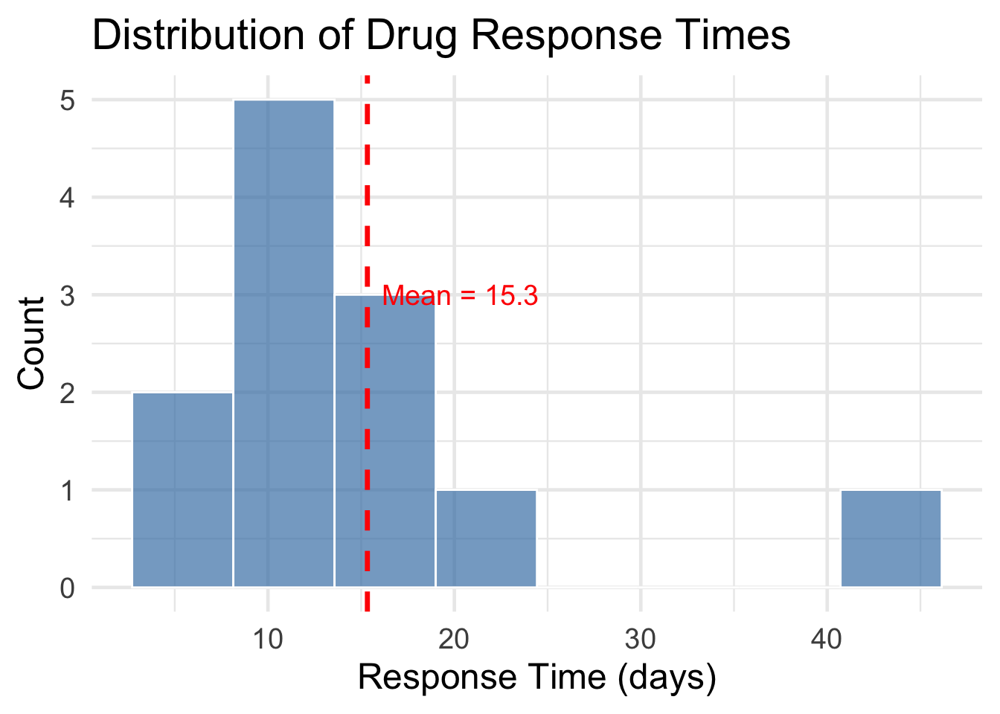

response_times <- c(8, 12, 15, 7, 22, 45, 11, 9, 14, 18, 10, 13)
tibble(x = response_times) |>
ggplot(aes(x = x)) +
geom_histogram(bins = 8, fill = "steelblue", color = "white", alpha = 0.7) +
geom_vline(xintercept = mean(response_times), color = "red", linewidth = 1.2, linetype = "dashed") +
labs(x = "Response Time (days)", y = "Count",
title = "Distribution of Drug Response Times") +
annotate("text", x = mean(response_times) + 5, y = 3,
label = paste0("Mean = ", round(mean(response_times), 1)), color = "red", size = 5)